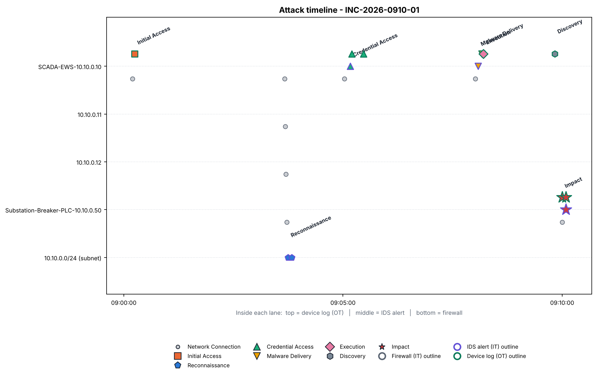
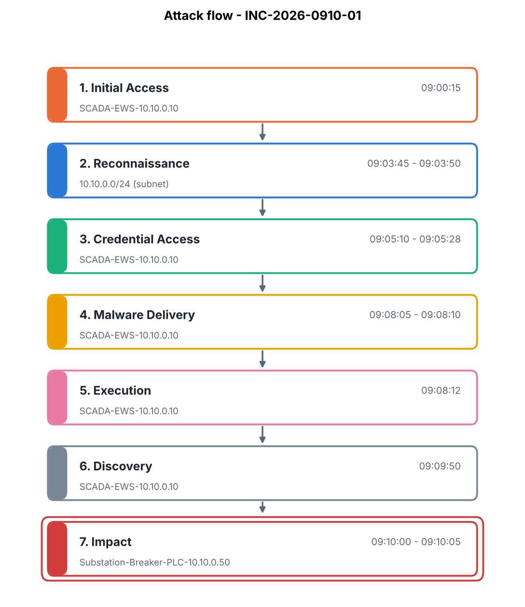
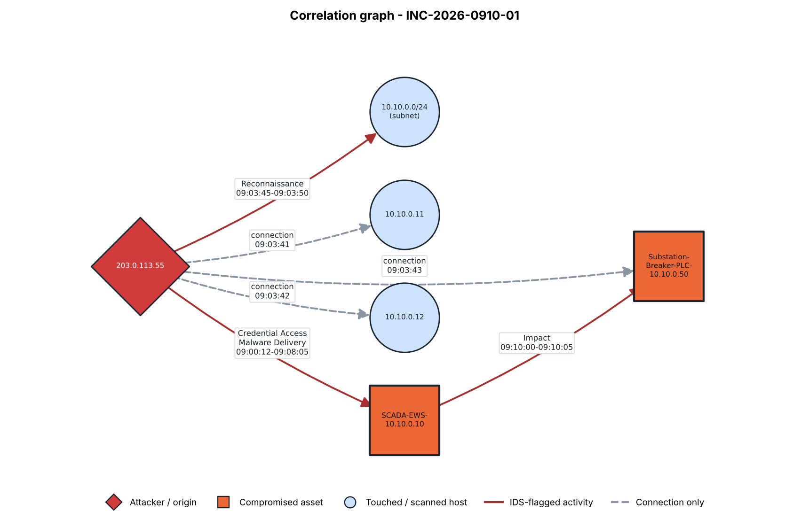

| Time | Stage | Asset | Source | Description |
|---|---|---|---|---|
| 09:00:12 | Network Connection | SCADA-EWS-10.10.0.10 | firewall | ALLOW TCP 203.0.113.55 -> 10.10.0.10:3389 |
| 09:00:15 | Initial Access | SCADA-EWS-10.10.0.10 | device | [SCADA-EWS-10.10.0.10] LOGIN by unknown_admin: Remote desktop login succeeded from 203.0.113.55 |
| 09:03:40 | Network Connection | SCADA-EWS-10.10.0.10 | firewall | ALLOW TCP 203.0.113.55 -> 10.10.0.10:22 |
| 09:03:41 | Network Connection | 10.10.0.11 | firewall | ALLOW TCP 203.0.113.55 -> 10.10.0.11:22 |
| 09:03:42 | Network Connection | 10.10.0.12 | firewall | ALLOW TCP 203.0.113.55 -> 10.10.0.12:22 |
| 09:03:43 | Network Connection | Substation-Breaker-PLC-10.10.0.50 | firewall | ALLOW TCP 203.0.113.55 -> 10.10.0.50:502 |
| 09:03:45 | Reconnaissance | 10.10.0.0/24 (subnet) | ids | ET SCAN Nmap Scripting Engine User-Agent Detected (Reconnaissance) |
| 09:03:50 | Reconnaissance | 10.10.0.0/24 (subnet) | ids | ET SCAN Suspicious Multi-Port Connection Attempt (Reconnaissance) |
| 09:05:02 | Network Connection | SCADA-EWS-10.10.0.10 | firewall | ALLOW TCP 203.0.113.55 -> 10.10.0.10:22 |
| 09:05:10 | Credential Access | SCADA-EWS-10.10.0.10 | ids | ET POLICY SSH Brute Force Login Attempt (Credential-Access) |
| 09:05:12 | Credential Access | SCADA-EWS-10.10.0.10 | device | [SCADA-EWS-10.10.0.10] AUTH_FAIL by root: SSH authentication failed (4 attempts) |
| 09:05:28 | Credential Access | SCADA-EWS-10.10.0.10 | device | [SCADA-EWS-10.10.0.10] AUTH_SUCCESS by root: SSH authentication succeeded after brute force |
| 09:08:01 | Network Connection | SCADA-EWS-10.10.0.10 | firewall | ALLOW TCP 203.0.113.55 -> 10.10.0.10:445 |
| 09:08:05 | Malware Delivery | SCADA-EWS-10.10.0.10 | ids | ET MALWARE Possible Malicious Payload Upload via SMB (Malware) |
| 09:08:10 | Malware Delivery | SCADA-EWS-10.10.0.10 | device | [SCADA-EWS-10.10.0.10] FILE_WRITE by root: New executable written to /tmp/update_agent.bin |
| 09:08:12 | Execution | SCADA-EWS-10.10.0.10 | device | [SCADA-EWS-10.10.0.10] PROCESS_START by root: Process update_agent.bin started |
| 09:09:50 | Discovery | SCADA-EWS-10.10.0.10 | device | [SCADA-EWS-10.10.0.10] CONFIG_ACCESS by root: SCADA engineering software opened, substation project file loaded |
| 09:10:00 | Network Connection | Substation-Breaker-PLC-10.10.0.50 | firewall | ALLOW TCP 10.10.0.10 -> 10.10.0.50:502 |
| 09:10:00 | Impact | Substation-Breaker-PLC-10.10.0.50 | device | [Substation-Breaker-PLC-10.10.0.50] LOGIC_CHANGE by SCADA-EWS-10.10.0.10: Breaker control logic modified via Modbus write, trip setpoint register altered |
| 09:10:05 | Impact | Substation-Breaker-PLC-10.10.0.50 | ids | ET SCADA Modbus Write Function Code Anomaly - Breaker Control Register (ICS-Attack) |
| 09:10:05 | Impact | Substation-Breaker-PLC-10.10.0.50 | device | [Substation-Breaker-PLC-10.10.0.50] STATE_CHANGE by SCADA-EWS-10.10.0.10: Breaker entered unexpected operational state (output override) - risk of unplanned trip |